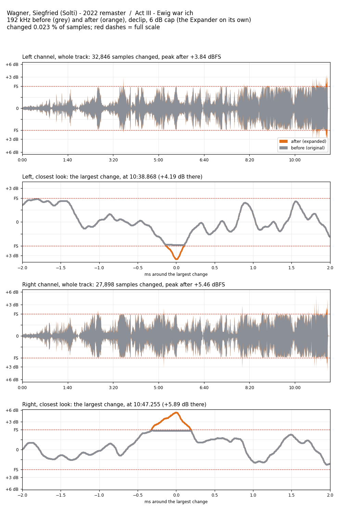
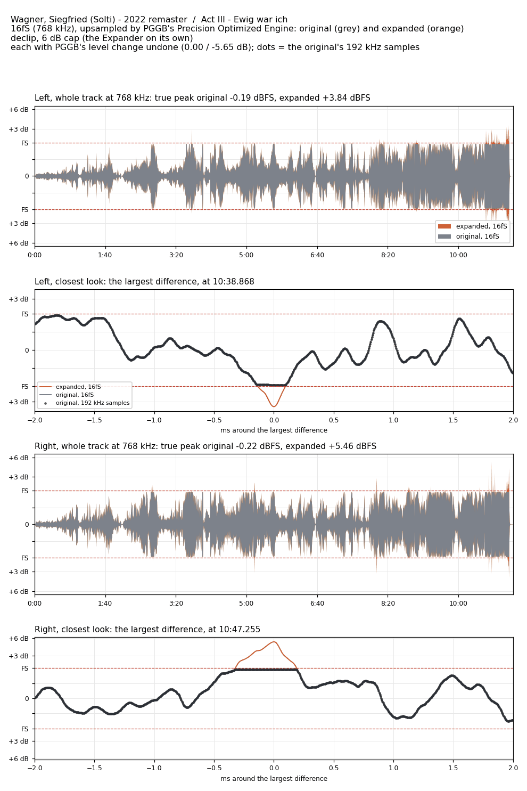
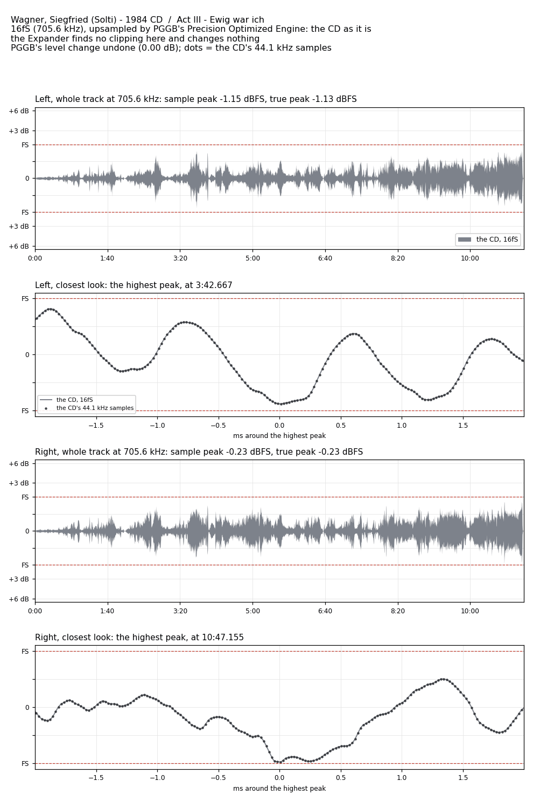
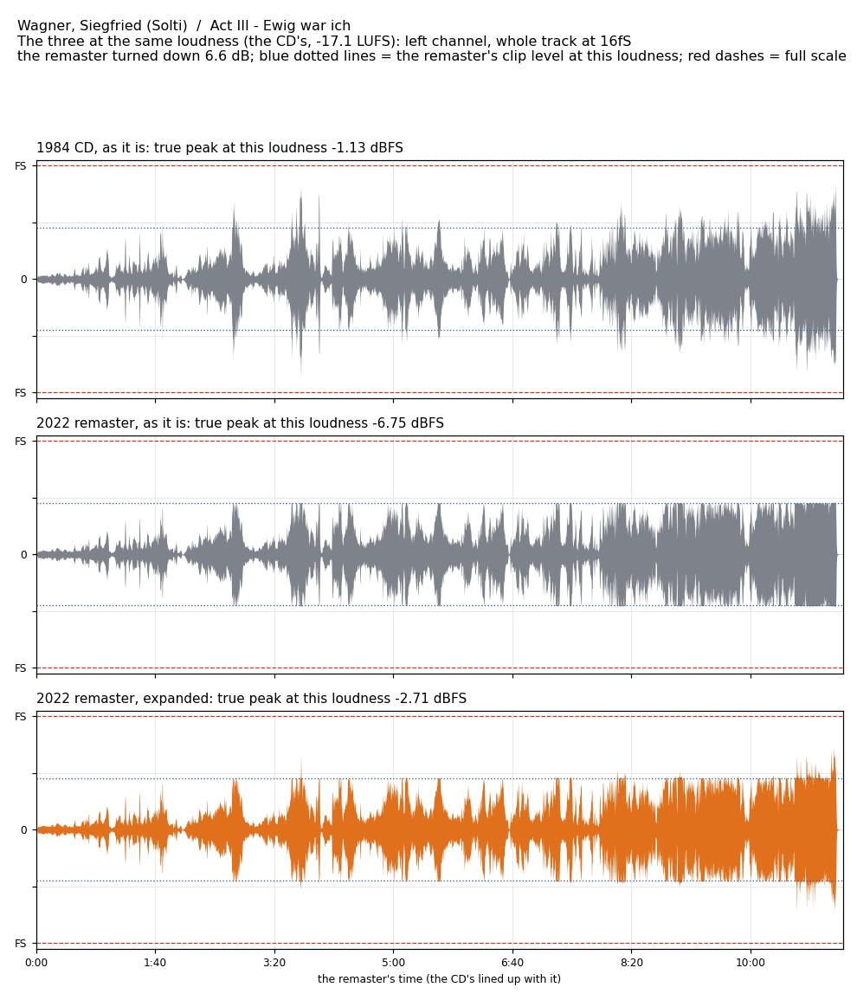
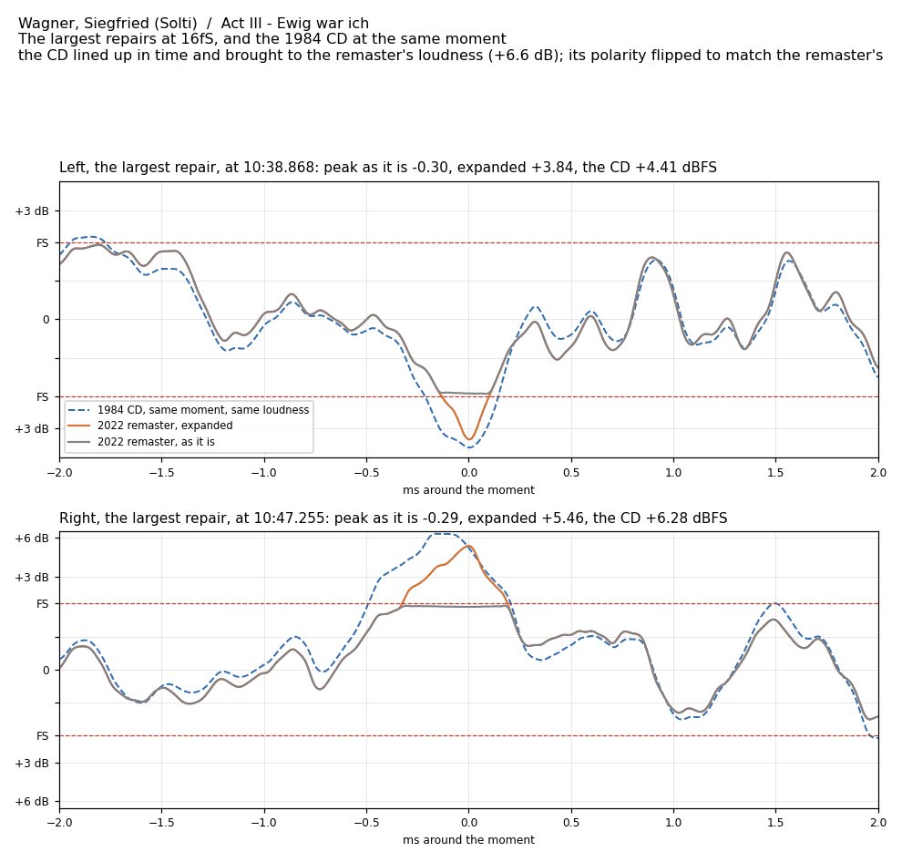

Two releases of the same recording: Solti's Siegfried, Act III, "Ewig war ich". The 2022 remaster is 192 kHz, 24-bit; the CD is 44.1 kHz, 16-bit. Here is what PGGB's Dynamic Range Expander does with each, on its default settings.
Against the CD: at the remaster's two largest repairs, the 1984 CD's own peaks, at the same moment and the same loudness, stand 0.6 dB (left) and 0.8 dB (right) above the Expander's rebuilt ones. The remaster's clipped tops stop 4.7 and 6.6 dB below them.
DR is the usual dynamic range value, as a DR meter reads it: the peaks against the loudest passages' average. Higher means more dynamic. The remaster goes from DR 7 to DR 11 with the Expander; the CD is DR 13.
| Release | Format | Loudness | Peak | DR as it is | DR expanded | Samples changed |
|---|---|---|---|---|---|---|
| 2022 remaster | 192 kHz, 24-bit | -10.5 LUFS | -0.32 dBFS | 7 | 11 | 60,799 |
| 1984 CD | 44.1 kHz, 16-bit | -17.1 LUFS | -0.23 dBFS | 13 | 13 | 0 |
The 16fS plots show each version upsampled by PGGB's Precision Optimized Engine. When it upsamples, PGGB turns each version down so its peaks stay under full scale; the plots undo that so the versions line up. A plot opens full size when you tap it.




